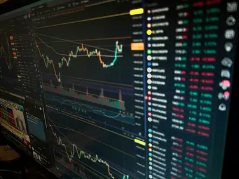

THE STARTING POINT
Understand the market.
Before you trade it.
Day trading is more than watching charts move. Learn the fundamentals behind price action, futures contracts, and responsible risk management.
Explore Your Trading Knowledge →01 / THE FOUNDATION
What Is Day Trading?

Day trading involves opening and closing financial positions during the same trading day. Traders study price movements and attempt to identify short-term opportunities.
Markets can move quickly, and even experienced traders experience losses. Understanding the risks is essential before putting real money into a trade.
02 / MARKET STRUCTURE
Understanding Futures
Futures contracts are agreements based on an underlying market, such as a stock index, commodity, or currency. Traders can take positions based on whether they expect prices to rise or fall.
Popular examples include Nasdaq-100 and S&P 500 index futures. Futures involve leverage, which can magnify both gains and losses.
03 / PROTECT YOUR CAPITAL
Risk Comes First
A trading plan should explain the conditions for entering a position, the amount at risk, and when to exit.
- Identify the market conditions before entering.
- Choose a maximum acceptable loss.
- Determine an entry and invalidation level.
- Evaluate the potential reward relative to the risk.
- Review the outcome and document what happened.
04 / TRADING VOCABULARY
Know the Language
- Stop Loss
- A predetermined price or order intended to limit a loss.
- Liquidity
- The ability to buy or sell an asset without significantly affecting its price.
- Risk-to-Reward Ratio
- A comparison of potential loss to potential gain on a trade.
- Market Structure
- The pattern of price movements, including highs, lows, and trends.
05 / CONTINUE LEARNING
Educational Resources
Visit the CME Group Education Center or Investor.gov for additional market education.